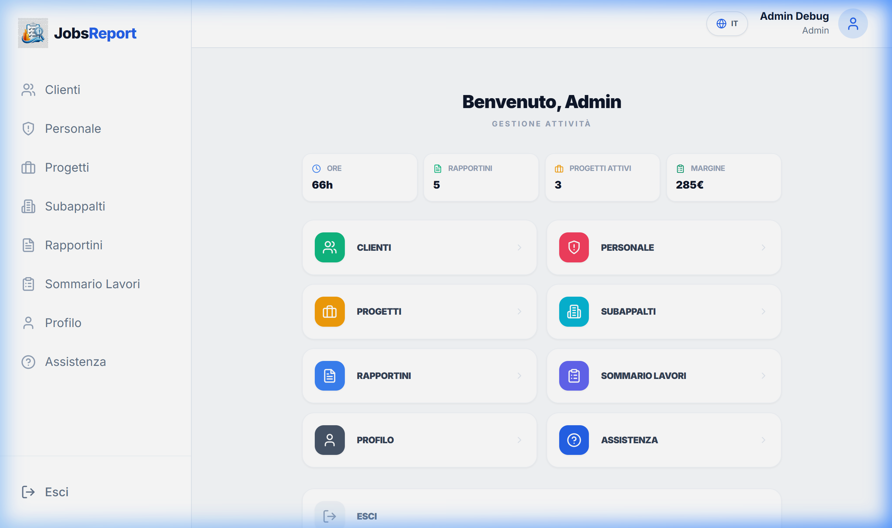
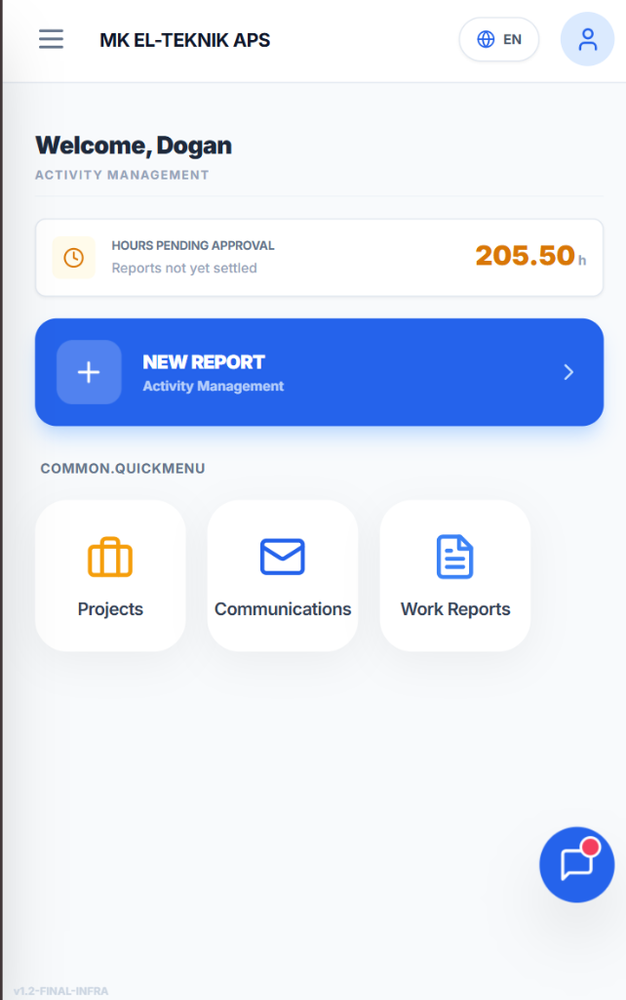
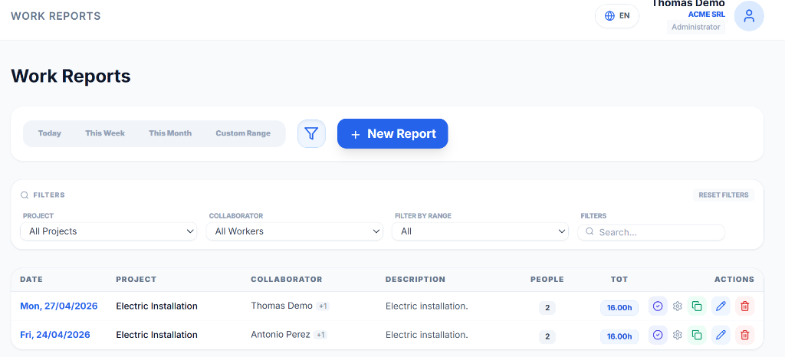
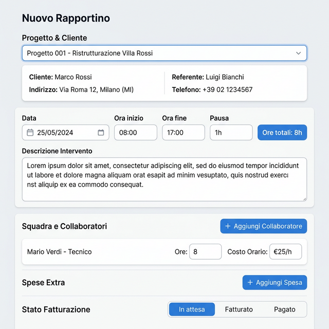
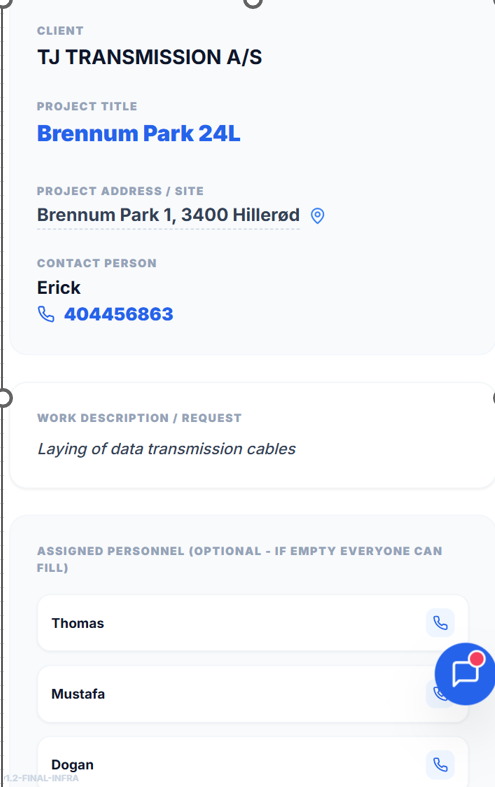
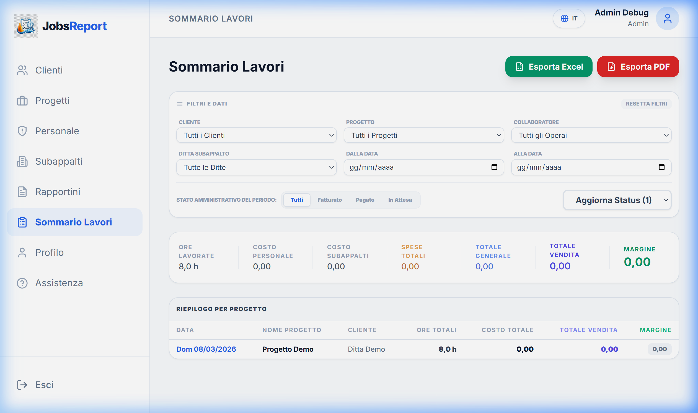

Introduzione
Jobs Report è un'applicazione web per la gestione dei lavori di cantiere, dei costi del personale e dei rapporti con i subappaltatori.
1. Accesso e Autenticazione
Login
Accedi con username e password. I livelli di accesso dipendono dal ruolo assegnato:
- Operatore: Inserisce i propri rapportini e visualizza il riepilogo ore mensile.
- Incaricato (Supervisor): Gestisce i propri rapportini e quelli della propria squadra.
- Amministratore: Controllo completo su progetti, personale e analisi economica.

Pagina di accesso — Inserisci le credenziali per iniziare
Recupero Password
In caso di smarrimento della password, contatta l'amministratore del sistema.
2. Pannello principale
Dopo il login accedi alla Dashboard principale con tutte le funzionalità autorizzate per il tuo ruolo.
Operatori e Incaricati vedono il Riepilogo Ore del Mese corrente. Gli Amministratori vedono i KPI aziendali.

Dashboard operaio — Ore in attesa di approvazione, accesso rapido a Progetti, Comunicazioni e Rapportini
3. Gestione Rapportini
Lista Rapportini
Visualizza i rapportini caricati con filtri per data e progetto.
- Operatori: Solo i propri rapportini.
- Incaricati: I propri e quelli della squadra assegnata.
- Admin: Tutti i rapportini aziendali.

Lista rapportini con filtri attivi
Creazione / Modifica
Clicca su Nuovo Rapportino e compila i campi:
- Progetto
- Data
- Squadra (aggiungi collaboratori)
- Spese (materiali, pasti, trasporti)
- Stato Fatturazione (solo Admin)

Form rapportino — orari, squadra, spese e stato fatturazione
Campi principali
| Campo | Note |
|---|
| Orario Inizio/Fine | Calcolo automatico delle ore totali. |
| Pausa | Ore di pausa detratte dal totale. |
| Straordinari | Calcolati oltre la soglia standard del profilo. |
4. Gestione Progetti
Dettaglio Progetto (Vista Operaio)
Ogni progetto mostra tutte le informazioni operative rilevanti direttamente dalla scheda:
- Indirizzo cantiere: Collegamento diretto a Google Maps per la navigazione.
- Contatto di riferimento: Numero di telefono cliccabile per chiamare direttamente.
- Personale assegnato: Ogni membro con pulsante di chiamata rapida.

Scheda progetto — indirizzo con mappa, telefono diretto e personale assegnato
Progetti e Clienti (Solo Admin)
Crea progetti, associali a clienti e assegna lavoratori o incaricati.
- Progetti Attivi: Selezionabili per l'inserimento ore.
- Progetti Chiusi: Archivio storico, non selezionabili per nuovi rapportini.
5. Gestione Personale (Solo Admin)
Gestisci l'elenco dei lavoratori, i ruoli e lo stato di attivazione.
⚠️ IMPORTANTE: Email e Accesso
L'email deve essere valida: viene usata per inviare l'invito all'utente. Senza email corretta l'utente non potrà accedere.
Dati richiesti:
- Nome e Cognome
- Email
- Ruolo (Operatore, Incaricato, Amministratore)
- Codice Identificativo
- Stato (Attivo / Inattivo)
6. Sommario Lavori (Solo Admin)
Analisi di costi e ricavi per progetto, cliente o lavoratore. Esporta in PDF o Excel con un click.

Analisi economica per progetto e cliente
7. Profilo e Impostazioni
Profilo Utente
Aggiorna i tuoi dati di contatto e visualizza il riepilogo ore mensile.
Lingua
Supporto per IT, EN, ES, PL, TR, DA. Cambia dall'icona del mondo nella testata.
8. Installazione (PWA)
Installa l'app sulla home del telefono o del PC con il tasto Installa App per accesso rapido e offline.